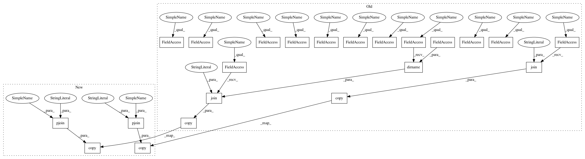

62f66d7fee4936de1d666338545b040131107def,mltsp/tests/test_build_model.py,,test_build_model,#,73
Before Change
def test_build_model():
Test main model building method
shutil.copy(os.path.join(os.path.join(os.path.dirname(__file__), "data"),
"test_classes.npy"),
os.path.join(cfg.FEATURES_FOLDER, "TEMP_TEST01_classes.npy"))
shutil.copy(os.path.join(os.path.join(os.path.dirname(__file__), "data"),
"test_features.csv"),
os.path.join(cfg.FEATURES_FOLDER, "TEMP_TEST01_features.csv"))
build_model.build_model("TEMP_TEST01", "TEMP_TEST01")
assert os.path.exists(os.path.join(cfg.MODELS_FOLDER,
"TEMP_TEST01_RF.pkl"))
model = joblib.load(os.path.join(cfg.MODELS_FOLDER,
"TEMP_TEST01_RF.pkl"))
assert hasattr(model, "predict_proba")
os.remove(os.path.join(cfg.MODELS_FOLDER, "TEMP_TEST01_RF.pkl"))
os.remove(os.path.join(cfg.FEATURES_FOLDER, "TEMP_TEST01_classes.npy"))
os.remove(os.path.join(cfg.FEATURES_FOLDER, "TEMP_TEST01_features.csv"))
After Change
def test_build_model():
Test main model building method
shutil.copy(pjoin(DATA_PATH, "test_classes.npy"),
pjoin(cfg.FEATURES_FOLDER, "TEMP_TEST01_classes.npy"))
shutil.copy(pjoin(DATA_PATH, "test_features.csv"),
pjoin(cfg.FEATURES_FOLDER, "TEMP_TEST01_features.csv"))
build_model.build_model("TEMP_TEST01", "TEMP_TEST01")
assert os.path.exists(pjoin(cfg.MODELS_FOLDER,
"TEMP_TEST01_RF.pkl"))
model = joblib.load(pjoin(cfg.MODELS_FOLDER,
In pattern: SUPERPATTERN
Frequency: 3
Non-data size: 22
Instances
Project Name: cesium-ml/cesium
Commit Name: 62f66d7fee4936de1d666338545b040131107def
Time: 2015-04-15
Author: stefanv@berkeley.edu
File Name: mltsp/tests/test_build_model.py
Class Name:
Method Name: test_build_model
Project Name: cesium-ml/cesium
Commit Name: 8c2ddb5b417754e42e15e96335b6b64bb6ac27fc
Time: 2015-04-15
Author: stefanv@berkeley.edu
File Name: mltsp/tests/test_predict.py
Class Name:
Method Name: test_main_predict
Project Name: cesium-ml/cesium
Commit Name: 62f66d7fee4936de1d666338545b040131107def
Time: 2015-04-15
Author: stefanv@berkeley.edu
File Name: mltsp/tests/test_run_in_docker_container.py
Class Name:
Method Name: test_build_model_in_docker_container